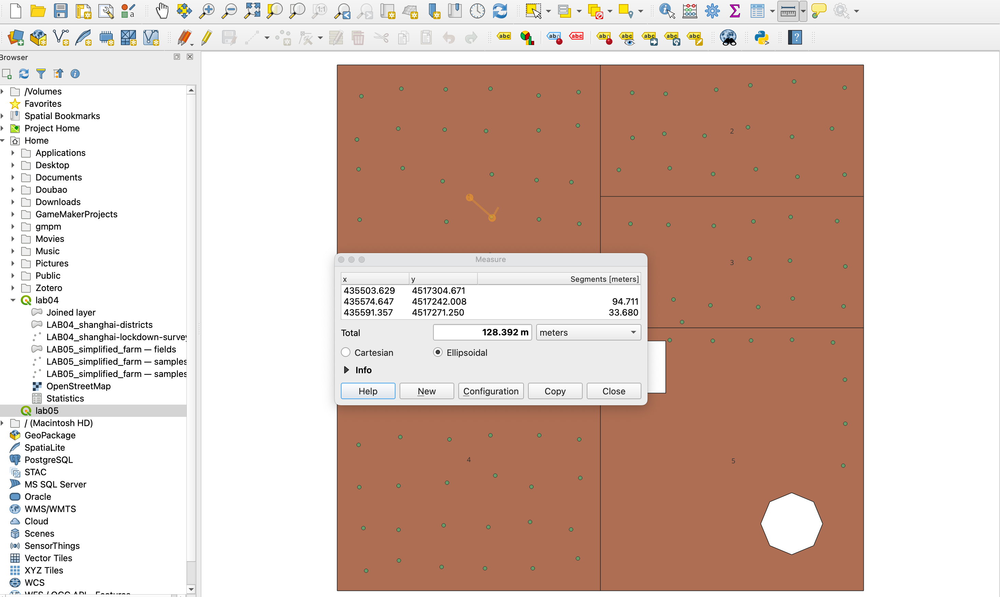
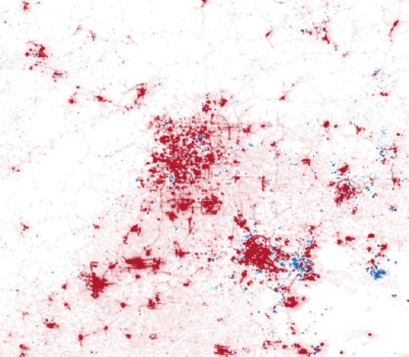
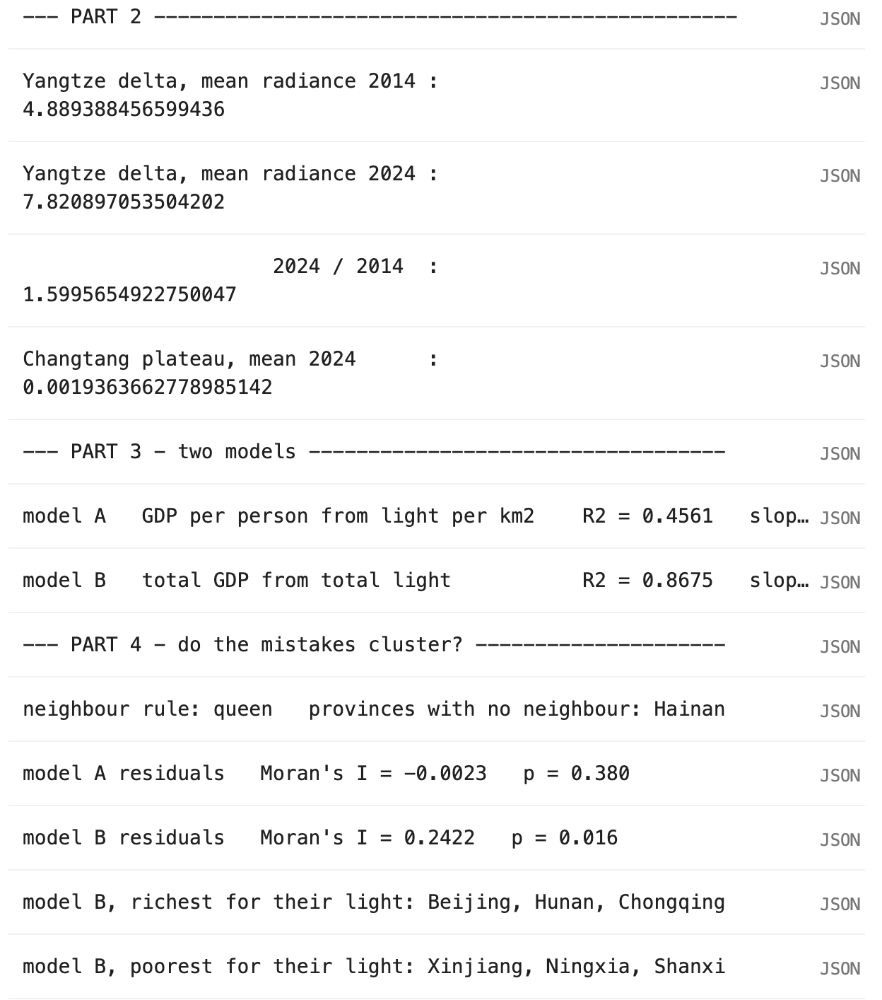

Lab 06 · November 2026
Lab 6 · Predicting from Pixels
Questions and Answers
Q1. Write the Yangtze delta ratio and the Changtang value from Part 2, and both R² values. Then, before Part 4, write one sentence: which model would you report, and why?
The mean nighttime radiance in the Yangtze Delta increased from 4.8894 in 2014 to 7.8209 in 2024, with a ratio of 1.5996. This represents an approximately 60% increase in average nighttime radiance over the ten-year period. In contrast, the Changtang Plateau had a mean radiance of only 0.00194 in 2024, indicating extremely low nighttime illumination.
| Measurement | Result |
|---|---|
| Yangtze Delta Mean Radiance (2014) | 4.8894 |
| Yangtze Delta Mean Radiance (2024) | 7.8209 |
| Ratio (2024 / 2014) | 1.5996 |
| Changtang Plateau Mean Radiance (2024) | 0.00194 |
| Model A R² | 0.4561 |
| Model B R² | 0.8675 |
Based on R² alone, I would initially choose Model B because it explains a much larger proportion of the variation in GDP than Model A.
Q2. Write Moran’s I and the p-value for both residuals, from two runs. Why did one of those four numbers move and the other not?
Under the queen contiguity rule, provinces sharing a boundary or corner are considered neighbours. Hainan was retained in the analysis despite having no neighbours.
| Model | Moran's I | p-value (Run 1) | p-value (Run 2) |
|---|---|---|---|
| Model A | -0.0023 | 0.374 | 0.380 |
| Model B | 0.2422 | 0.015 | 0.016 |
Model A shows almost no spatial autocorrelation, and its p-values are not statistically significant. In contrast, Model B has a positive Moran's I and statistically significant p-values below 0.05, suggesting that its prediction errors are spatially clustered.
The Moran's I values remained unchanged because the residuals and neighbour relationships were fixed. However, the p-values changed slightly because the permutation test randomly shuffles residuals 999 times, producing slightly different results in each run.
Q3. Write the two new values. Did your conclusion change?
After changing the neighbour rule from queen to knn4, each province was assigned its four nearest neighbours based on the distance between provincial centres. Unlike queen contiguity, this method also gives Hainan neighbours.

| Model | Moran's I | p-value |
|---|---|---|
| Model A | 0.0141 | 0.309 |
| Model B | 0.2753 | 0.011 |
The overall conclusion did not change. Model A still shows no statistically significant spatial clustering, while Model B continues to exhibit significant positive spatial autocorrelation. In fact, Model B's Moran's I increased from 0.2422 to 0.2753, suggesting somewhat stronger clustering under the KNN4 rule. This comparison demonstrates that spatial statistical results depend partly on how researchers define neighbourhood relationships.
  https://code.earthengine.google.com/fc2c2ab52f95478f2c78765f0c3c0ddd
The analysis includes 31 Chinese provincial-level administrative units, including provinces, autonomous regions and municipalities. The dataset combines 2024 provincial GDP figures (preliminary, from the China Statistical Yearbook 2025) with nighttime light measurements. Hainan is retained without neighbours under the queen contiguity rule.
Reflection
Although Model B has a much higher R², I would be cautious about using it to guide real-world decisions. Its residuals show significant spatial clustering under both queen contiguity and KNN4, suggesting that the model overlooks geographical factors such as industrial structure, regional policies and differences between coastal and inland economies. I would therefore report its results alongside Moran's I, permutation p-values and sensitivity tests using alternative neighbour definitions.
Map
Visual channel
What it makes easy to see
What it hides or distorts
Screenshot 1: Nighttime Light Change (2014–2024)
Google Earth Engine Script
Data and Reflection